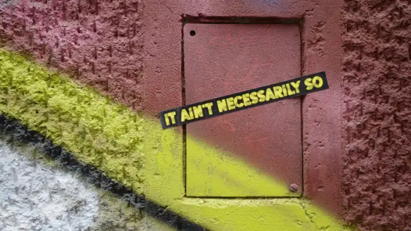

Jun 2, 2026 Museums & CultureVendors & contractsRegulation Three contract fights your AI vendor hopes you won’t pick What museum Directors, Legal Counsel & Collections Leaders need in their vendor agreements and how to brief your solicitor.
 May 26, 2026 Museums & CultureVendors & contractsRegulation What your AI vendor isn’t telling you, and what to ask when you’re a museum How to grill AI vendors on security, data protection, and data sovereignty.
May 19, 2026 Museums & CultureRegulation A friendly lunch break guide to your museum’s legal obligations as an AI Deployer What Directors, Digital & Collections Managers need to know before August 2026.
Mar 16, 2026 Museums & CultureRegulationPolicy & leadership The EU AI Act played it safe. Cultural institutions are paying for it. When the most comprehensive AI law in the world doesn’t see your sector, you’re on your own.
Mar 9, 2026 Museums & CulturePolicy & leadership Museums keep doing this. Funders keep paying for it. Nobody learns. In the cultural sector, arts funders and AI policy frameworks guarantee the failures they claim to prevent.